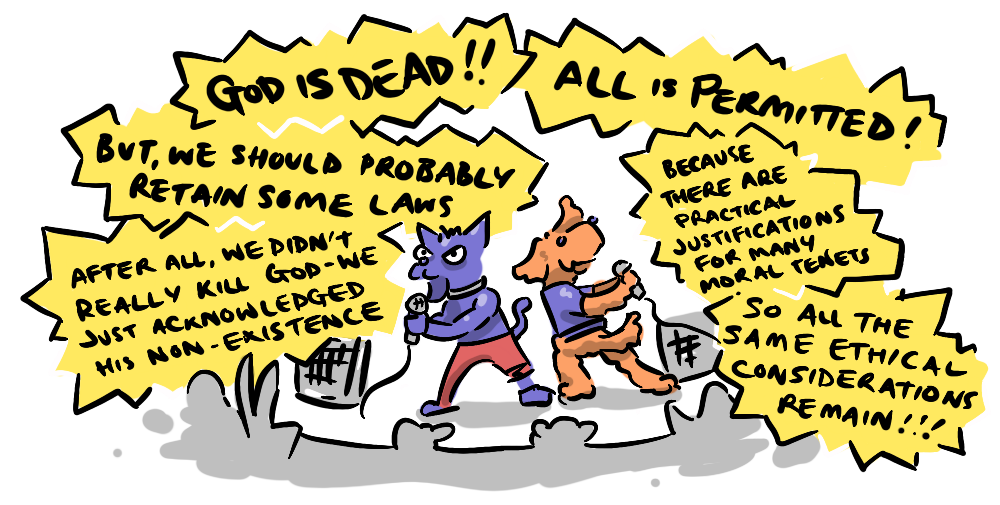
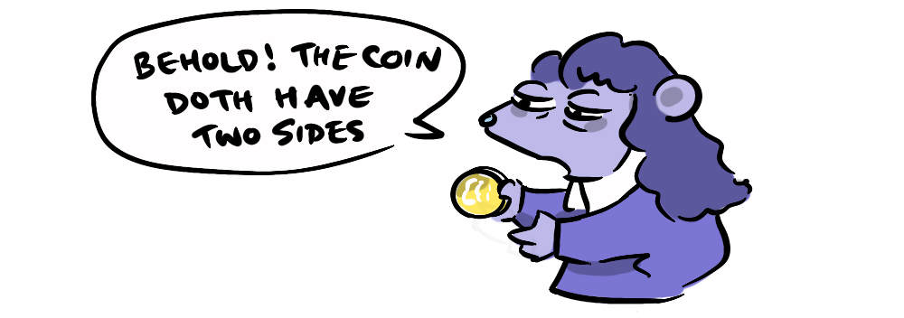
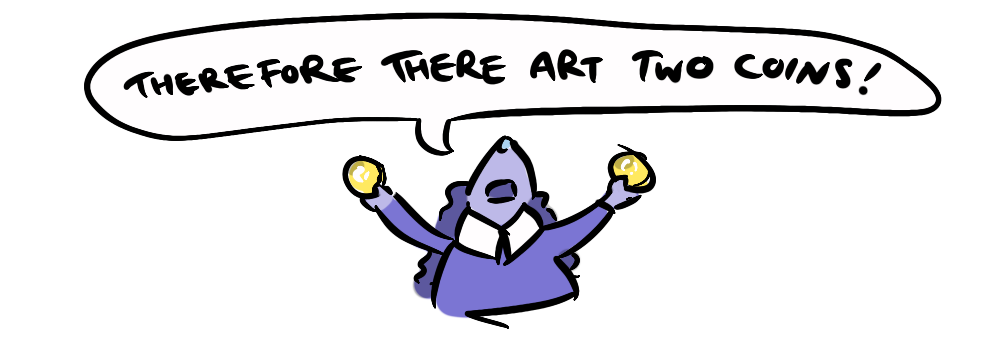
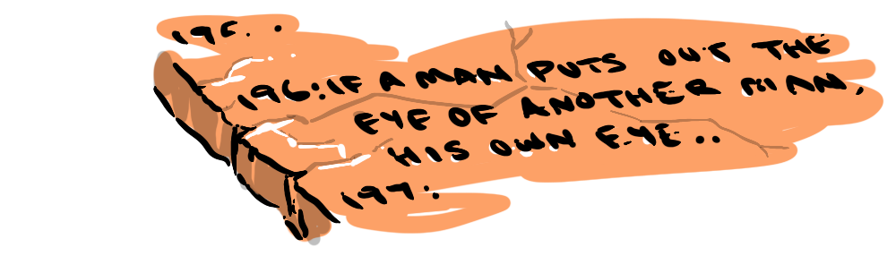
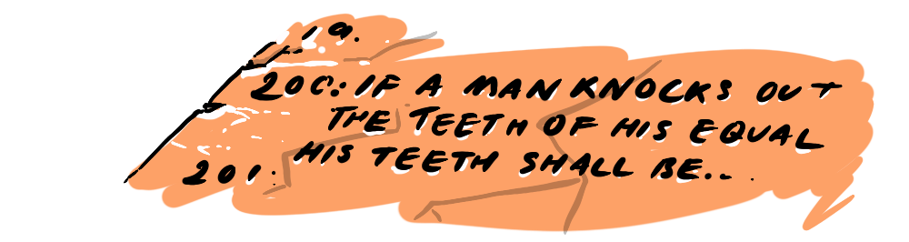
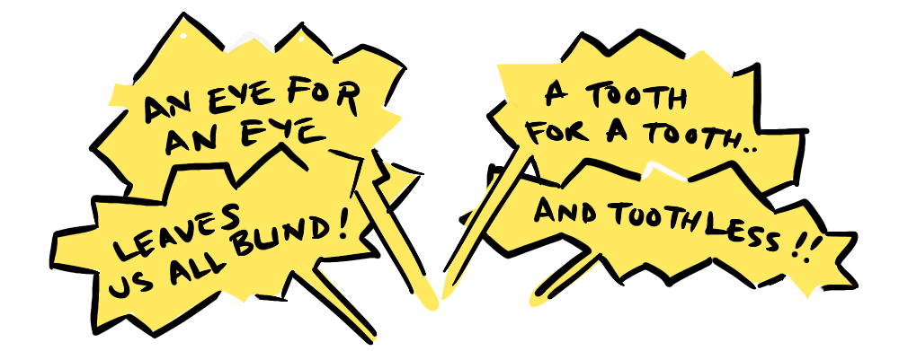

In the first post in this series, we detailed what polymaths are and what first principles thinking is. In this post we will critique first principles thinking and make a case that reasoning by analogy is a more effective method—even for its critics.
First principles thinking is antithetical to the concept of common sense, and that is how it helps us break with convention. The issue with this though is that because common sense is so common, the reasoning, logic and material benefits behind common sense positions can be easily overlooked.
What is disregarded as
Now, embarking on this brave new world with enough reasoned analysis, we may end up rediscovering values that resemble our current moral intuitions, perhaps because they were reasonable in the first place, or perhaps because of the inertia of our own biases, but given a few missed details, we could end up somewhere entirely dystopian.
Naive foundationalism that fails to consider seriously what is being lost, is dangerous.
One example of first principles going wrong comes from Descartes himself. Soon after declaring "cogito ergo sum" Descartes then leapt to a conclusion that, because existence could be confirmed through consciousness but not via physical evidence, consciousness and physics must be categorically independent, leading him to dualism—the claim that there are independent spiritual & physical realms, a philosophical framework that coincidentally aligned with his previously held religious beliefs.
This naive dualism was challenged philosophically long before neuroscience established the strongly dependent nature of consciousness on the physical processes of the brain. The point being, for Descartes, dispelling assumptions only served to enable him to replace them with all with one new flawed assumption (and a big one, at that).
We can see that there are significant pitfalls to taking first principles to its extreme, and failing to account for the hard-won lessons of history. But is there a better way to innovate? Yes...
As mentioned in the previous post, Leonardo Da Vinci is a canonical example of a polymath who learned via analogy. His understanding of hydraulics, "flowed" directly into his understanding of blood-vessels and anatomy, his knowledge of perspective and light, informed his "insights" in the field of of optics, his study of animal bodies gave him "the bones" on which to model his flying machines.
The puns in the previous paragraph are not merely to rhetorically dress up Leonardo's innovation in flamboyant garb—they are intended to illustrate something deeper. In The Stuff of Thought Steven Pinker points out that the very conceptual language we use to understand the world is imbued with physical analogy. Understanding can "flow" between concepts, knowledge can be "in-sight-ful", a set of ideas is described as a "field", they can "take flight", they can be "dressed up", they can be "based upon" or "illustrated"… even "understand" means to stand among—where all the elements of an idea are visible to us at once as a cohesive whole.
For Pinker, analogy is not just a feature of conceptual language, but is the whole kit and kaboodle.
Douglas Hofstadter in I am a Strange Loop goes even further than Pinker, to propose that all thought is allegorical, and that our very sense of self cannot be understood from first principles, it can only be understood by analogy.
"In the final analysis, virtually every thought in this book, or in any book, is an analogy, as it involves recognising something as being a variety of something else."—Douglas Hofstadter (I am a Strange Loop)
This aligns strongly with something I discovered while writing and simulating Contagious Beliefs—strange bedfellows—that it is possible to view knowledge as something we only acquire by checking new information against the aggregate of information we already understand (or believe we understand) in our mind. Pinker and Hofstadter are offering an example of this—we build our conceptual world upon our understanding of the physical world. This makes sense because, although we cannot directly access each other's inner thoughts, we do have common access to the physical world. So, building our conceptual language on top of our understanding of the physical world gives us a common reference point, a "touch stone", if you will, which is essential to communication.
This is why analogies go back to our earliest historical records. A thousand years before the most famous example of philosophical allegory: Plato's Cave, analogies were being used. When the code of Hammurabi stipulated "If a man destroys the eye of another, his own eye is destroyed" or "If he knocks out the teeth of his equal, his own teeth are knocked out" (later echoed in the bible as a "an eye for an eye, a tooth for a tooth") the Babylonian king was not only detailing a particular policy regarding eyes and teeth, he was illustrating a general analogy for reciprocal consequences—a framework from which other similar rulings could be inferred.
When Musk says "people's thinking process is too bound by convention or analogy to prior experiences" he doesn't go far enough. If Pinker and Hofstadter are to be taken seriously, people's thinking is entirely "bound" in such a way. Despite his advocacy for First Principles thinking, Musk fails to recognise how much his own innovative process is driven by analogy.
Musk caricatures arguing by analogy as "people like this, so let's make more of this". But analogy isn't mere facsimile, analogy is translation from one situation to another, or from the particular to the universal. This means we can capitalise on hard won lessons in one field and apply them to another—something Musk does all the time!
Like Leonardo, Musk's insight around "materials problems" is one such lesson that is transferrable between fields, it applies equally to rockets or electric cars. The reason it is transferable is because the production of one new technology is analogous to the production of other new technologies (the particular to the universal). This approach is essential for…
Many of the greatest breakthroughs in history have been the result of analogies across domains.
Darwin's discovery of evolution by natural selection, was informed by his knowledge and research in biology, but it was the combination of these observations with the economic theories of Malthus regarding competition, scarcity and differential success, that gave him the vital connection. Natural selection is an economic analogy, applied to biology.
Newton's invention/discovery of the calculus came from trying to solve physical problems mathematically. Calculus provides a mathematical analogue to change over time.
Einstein, never shy to weigh in on and connect ideas between science and philosophy (God does not play dice), not only illustrated his theories of relativity for the layperson through stories of clocks and beams of light and trains, but it was Einstein's capacity for analogy that actually lead to the development of his insights, in the form of thought experiments concerning "riding a beam of light" or "elevators in free fall". His mathematics codified insights borne of analogy.
And the above breakthroughs are not isolated cases. It has actually been found that Nobel Laureates in science are 2-3x more likely to:
- actively practice music, visual art, writing, or crafts
- engage deeply in non-scientific creative pursuits
Many laureates actually report using artistic skills directly in their scientific reasoning. This becomes particularly evident when it comes to explaining their theories in interview to a lay audience. Analogy provides a bridge from the recognisable to the novel and strange. Such geniuses are deep specialists who appreciate paralell representational systems.
These breakthroughs come through the translating of deep structure across domains, not the copying of superficial features.
In the next post, we will ask what this means for ordinary people. Is this powerful tool of innovation available to us to? Is it applicable in our everyday lives? We'll conclude by looking at the risks we face when we abandon analogy in favour of first principles alone. If you want to unlock your inner genius be sure to sign up to the newsletter, so we can let you know when the final post is up.